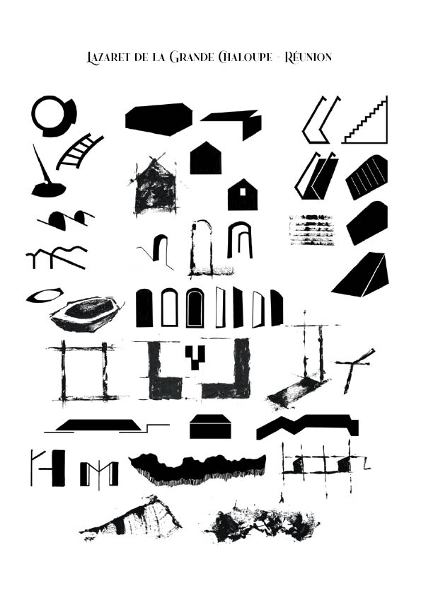

Lazaret\\
Ce projet à pour but de conçevoir une installation graphique inspiré d'un lieu précis.
Mon choix c'est porté sur le Lazaret de la Grande Chaloupe à la Réunion. C'est un lieu chargé d'histoire qui autrefois à servis de lieu de quarentaine pour les migrants venus
de différents continents. Ce lazaret est donc l'origine de la mixité des cultures à la Réunion.
Je suis donc passé par une phase de recherche sur les condtitions de vies à l'époque ainsi que sur le site actuellement ( lecture, croquis, photos, videos).
Les productions finales sont des cartes postales du lieu actuel, une édition regroupant toutes les recherches, et une seconde repprenant toutes les photos prises du site.
Ensuite, la maquette de la salle conçue, les lumières et plans de ciculations, ainsi que le choix des bandes audio, et la créations de posters informatifs sur l'historique du lieu.
Enfin à l'aide de toute les recherches, j'ai relevé des signes graphiques à l'aide de paysage, d'objets du site pour en faire des posters.